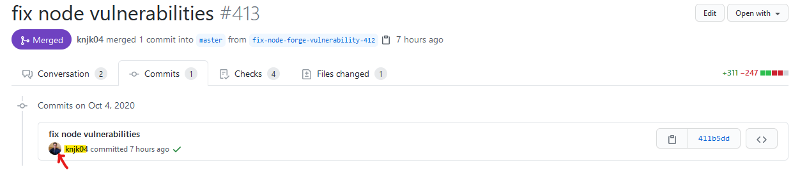

Contributing
Thank you for taking an interest in contributing!
Please note that by contributing to any of our projects, you are expected to adhere to this contributing document. Please also ensure that you remain familiar with this contributing document as it may change from time to time.
Code of Conduct
By contributing to this project, you are expected to adhere to our Code of Conduct.
Contents
- Ways to contribute
- Receiving a response
- Open-ended discussions
- Before making changes
- Tell us which issue you want to work on
- New contributors assigned to at most one issue at a time
- Discuss your implementation approach
- Ensure your email address on your commits are correct
- Workflow
- Commit messages
- One problem per patch
- Squashing Commits
- Code contributions
- Writing tests
- New files
- Pull requests
- Merge conflicts
- Resolving conversations
- Stale issues & pull requests
- Unassigning yourself
Ways to contribute
- Code: adding new features, fixing bugs and general refactoring to name a few
- Code reviews: either offering to review a pull request on Slack or if you see a pull request and think the code could be improved, feel free to offer suggestions on how to do so. This can help improve our code quality and is much appreciated!
- Before reviewing code, please ensure you are familiar with and understand our code reviews document
- Issues and pull requests labelled with needs-repro have yet to be reproduced. If you're able to reproduce it, letting us know would help a lot
-
Our test coverage is low, so we need a lot more tests, particularly the areas that are undertested or not covered at all
-
Documentation: improvements (including fixing typos!) to files such as our READMEs, any wiki page, any of our style guides, comments in source files, this contributing document or the code of conduct.
-
Design: helping to design the UI and UX of the web app through prototypes (such as wireframes and drawings)
-
Feedback: we're eager to find new ways to improve, so please do let us know! Start a new idea discussion on GitHub
-
Triage: help us to triage issues and pull requests
In addition to the above, you can get involved in shaping the future of the project over on Slack.
Receiving a response
We aim to respond to all messages (on Slack and on GitHub) within seven days. Similarly, we aim to review all pull requests within seven days of receiving it in a review state.
If you haven't received a response, feel free to mention @knjk04 or get in touch on Slack.
Open-ended discussions
Open-ended discussions are best made over our public #help channel on our Slack workspace. Unless specified otherwise, this applies when you're not assigned to the issue at hand.
Examples of when to take a discussion over to Slack:
- If you disagree with an issue (e.g. if you don't think it's needed or there is a better way of doing something)
- If you would like to make comments, suggestions or amendments to our style guide
- If you would like to comment on the overall direction of the project
The reason for this is because we don't want to make discussions on issues or pull requests longer than they need to be. For example, creating an open-ended discussion on a pull-request code review can distract away from the actual code review and confuse the contributor assigned to the pull request (i.e. it's off-topic).
Before making changes
Tell us which issue you want to work on
This applies to both code and documentation changes.
If an issue already exists for what you want to work and it is unassigned, and it is not labelled as blocked, feel free to let us know that you want to work on it. We can then assign you to it. If an issue doesn't already exist, please create one and then let us know that you are happy to work on it.
Letting us know which issue you want to work on before working on it helps to minimise the chances of duplicated work.
New contributors assigned to at most one issue at a time
If you have a new contributor (have not yet contributed to the project), we ask that you only request to be assigned to one issue. Only once your corresponding pull has been merged can you request to be assigned to other issues (more than one).
The reason for this restriction is because we have had people ask to be assigned to an issue but then, for whatever reason, not work on it. We don't want to find ourselves in a situation where multiple issues are assigned to one person who then does not deliver. We want to keep our project alive at a good pace.
Discuss your implementation approach
After having been assigned to a ticket, please discuss your implementation approach with us first before working on it. It may be the case that you make a good change, but it isn't what we are looking for. Moreover, there may be a better way of doing something.
This step can help to save both your time and our time in the long run :)
Ensure your email address on your commits are correct
If your email address that you are committing with does not match the email address associated with your GitHub account, you won't show up as a contributor on our repository or on your profile.

In the above image, the contributor's avatar is the same as the avatar on their GitHub profile. In addition, their username (highlighted) is a link to their GitHub profile. This won't be the case if you haven't set things up correctly.
You can check the email address in your git config with the following command:
$ git config user.email
You can then ensure that this matches the email address on your GitHub account (look in 'Settings').
For more information, see GitHub's documentation page on 'Why are my contributions not showing up on my profile?'.
Rewriting pushed commits with a different email address
Step 1:
While on your feature branch, run
$ git rebase -i HEAD~n where n are the number of commits you would like to change
This will then open your commits in the default text editor for Git (which may be Vim or Vi, so you may wish to change this if you prefer a different editor).
Step 2:
Change the lines with 'pick' to 'edit' and then save and quit the file
Step 3:
$ git commit --amend --author= "[Your name] [your email address as shown on GitHub]" --no-edit
Step 4:
$ git rebase --continue
You'll need to run steps 3 and 4 n number of times, where n represents the number of commits that you are rewriting.
Step 5:
Once you've finished with the rebase, force push:
$ git push -f origin [your-branch-name]
Workflow
Please follow the process below:
- Tell us which issue you want to work on
- Discuss your implementation approach with us
- Fork the repository
- Create a new branch off main (unless the corresponding issue says otherwise). Your branch should have a descriptive branch name (that corresponds to the relevant issue) and include the issue number (e.g.
add-styleguide-1048) - Please do not use quotation marks or apostrophes in your branch name
- Bring your branch level with the branch you're going to be branching into before submitting a pull request (we recommend rebasing)
- i.e. if you're going to be branch off
main, then rebase new changes from main onto your branch - Submit a pull request to merge into the branch specified on the issue (or main if a branch is not specified)
Commit messages
-
Use the present tense (e.g. "add converter", not "added converter")
-
Ensure your commit messages are descriptive (i.e. a commit message should effectively summarise what change(s) you made)
- In line with this, you may want to break up your contribution into smaller commits
- Generally speaking, the default GitHub commit messages (e.g.
add [file]orupdate [file]) are not sufficient
One problem per patch
For every patch (i.e. pull request) you make, please ensure it solves one problem. If you want to solve multiple problems, please spread them across multiple patches -- one patch per problem.
This makes it easier to keep track of what changes were made in what branch or pull request when looking back. Additionally, it makes code reviews go a lot quicker and smoother.
Squashing commits
If you need to fix a small issue (e.g. fixing typos), address review feedback or fix a failing build, please squash your commits. This can be done using an interactive rebase:
$ git rebase -i HEAD~n
where n represents the number of last commits.
You can then change the commit that you want to squash with the previous by changing the word 'pick' to 'squash'. When pushing the changes, you'll need to force push (e.g. git push -f origin add-avatar).
Syncing your fork
You can keep your fork up-to-date by first creating a remote for the upstream and then syncing your fork.
Code contributions
Please adhere to our relevant code style guide(s) for the issue you are working on.
Before submitting a pull request, run the unit tests locally and ensure they pass.
Writing tests
Generally speaking, if you're working on a new feature (any issue with the enhancement label) or fixing a bug, please also write tests. If you need a hand with this, we can help.
We highly recommend following a test-driven development approach.
New files
If you're adding a new file, please ensure to copy the contents of our copyright file verbatim (use the latest version on the main branch).
Pull requests
If you've opened a pull request but it is not yet ready for a review, please convert it to a draft. Otherwise, we may help you out by adding to your branch while you're also working on it if the changes needed are small or if the work needs to be completed quickly (e.g. if it is a high priority bug or if it is blocking other work).
The same applies for pull requests where we've requested changes -- mark it as a draft until you're ready for another review.
Merge conflicts
We expect you to resolve any merge conflicts that appear when you have a pull request. This includes when you first create the pull request and at any point later on if merge conflicts appear before your pull request is merged. This is to minimise the time spent reviewers spend reviewing pull requests, but it is may also provide you with the opportunity to change or adapt your work based on new changes.
Resolving conversations
It is best to leave resolving a conversation (e.g. a review comment) to the reviewer that created it. This way, they can check for themselves whether the suggestion was implemented as desired.
Stale issues & pull requests
If you have been assigned to an issue and we have not heard back to you for a week (either through a message or seeing a pull request you made), we will send a friendly message asking whether everything is OK and whether you need a hand. If you need more time, the work is non-urgent and is not blocking anyone, that's completely fine, just let us know. If possible, try to let us know how long it will take you to submit a ready-to-review pull request. If we have not heard back from you one week after our friendly reminder (i.e. two weeks after you were first assigned to the issue), we will unassign you from the issue. This is so that we can assign someone else to the issue.
Pull requests are similar. We will send a friendly reminder after one week of receiving the pull request or receiving your last message. If we don't hear back from you, we will close the pull request and label it as stale.
For urgent work, such as fixing important bugs or work that is blocking others, a similar process will be followed but with shorter timescales. Exactly how long depends on the severity of the stale work. Where possible, we will inform you whether an issue is important so that you can know before picking it up. For high priority bugs, we recommend that you only take it up if you can commit to finishing it reasonably quickly.
The reason that we ask to be kept informed is so that we don't find ourselves assigning work and then never hearing back from the contributor. In turn, this allows us to progress with the project at a good pace.
Unassigning yourself
If you no longer wish to work an issue, that's fine. All we ask is that you let us know. If you unassign yourself from the issue, we don't get notified, so a quick message (no explanation required) will do. We can then assign it to someone else.
Where possible, please let us know as soon as possible if you no longer wish to work on an issue.
Please also consider that you're finding something difficult on the issue you're assigned to, we're here to help on Slack.